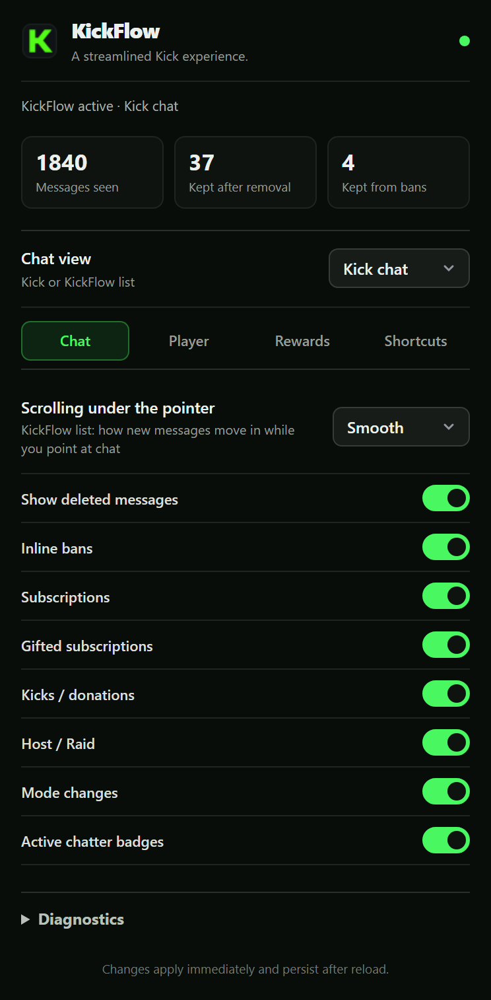
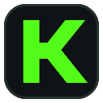

KickFlow
chat context and player controls for Kick, in Chrome
Synthetic stream
❚❚
04:51:14
LIVE
◀◀ 10
10 ▶▶
1x
Chat

Switch any feature in the popup
Session numbers at a glance, four tabs:
Chat
,
Player
,
Rewards
,
Shortcuts
. English and Turkish.

KickFlow
Free Chrome extension · MIT licence
github.com/ydbilgin/kickflow